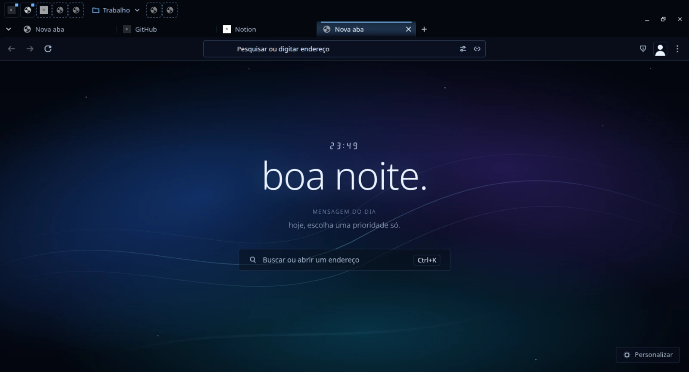
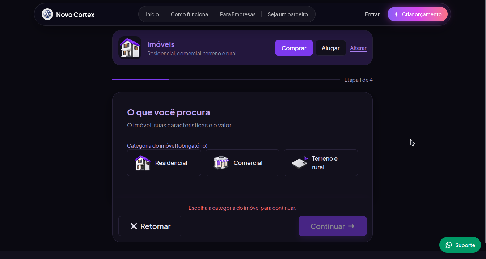

> meus projetos no github
> conheça meu perfil
Clique aqui para visitar meu Github.
dashwr - GithubEsse é meu maior projeto pessoal atual, Aerographene - o navegador que é mais rápido que o seu navegador atual. Clique na foto para saber mais.

Ele foi criado inteiramente por mim com ajuda de IA - para tirar minhas sugestões, processos e ideias do papel - com base em projetos que escolhi a dedo, tal como ungoogled-chromium como base absoluta, Helium como fonte de alguns patches e Thorium como guia.
Além dele, tenho experiência desenvolvendo e mantendo sites de todo porte. Desde um cartão de visita interativo até uma plataforma comercial de venda reversa em next/pgsql por meio da criação de orçamentos gratuitos. Clique na imagem abaixo para ver a demo pública!
